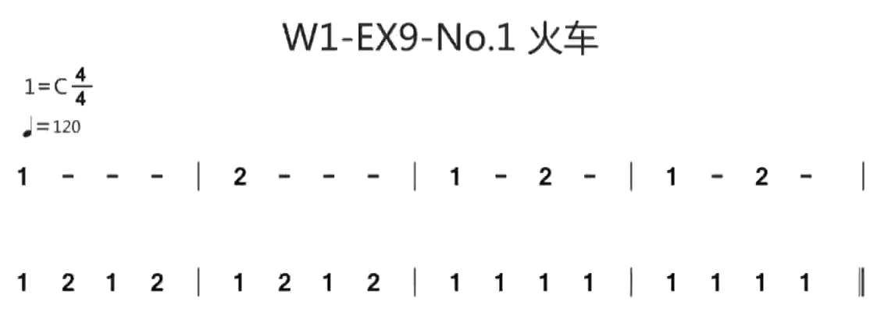
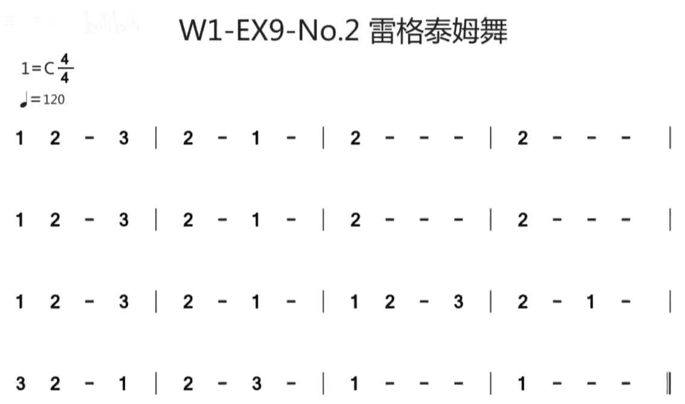
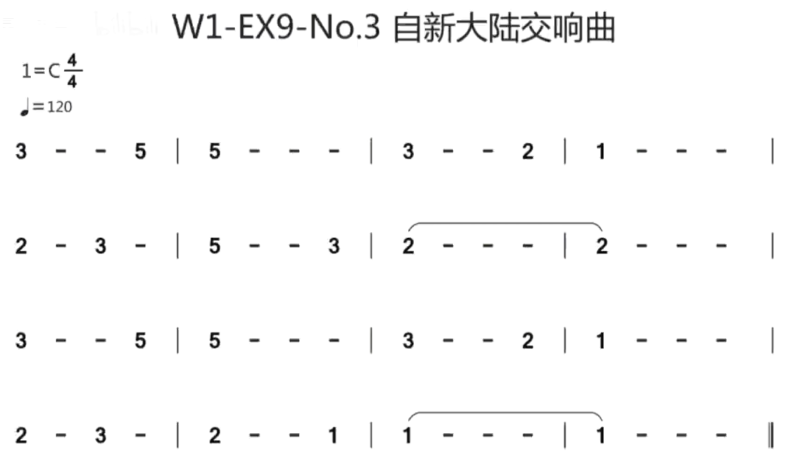
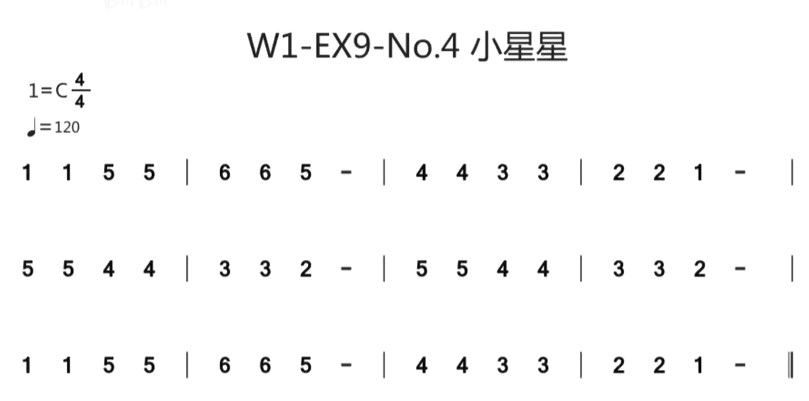
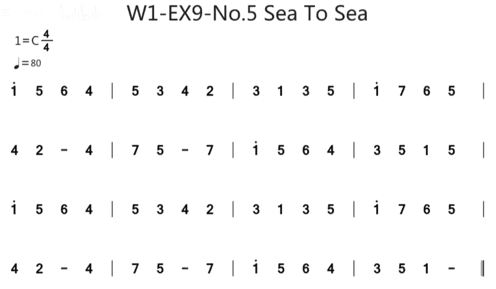
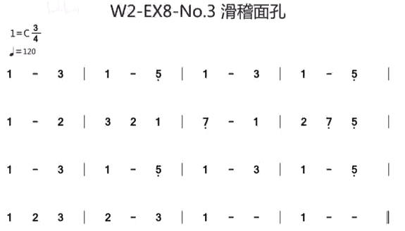
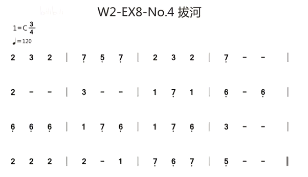
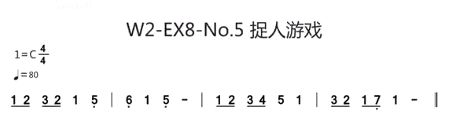
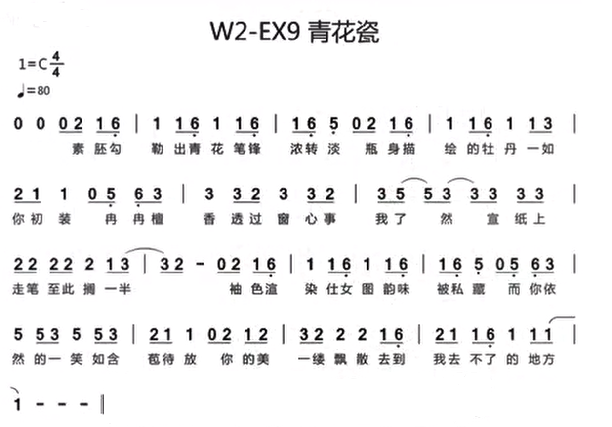

這篇文章記錄了我學習電吉他積累的筆記。主要是一些譜子和每個練習的注意要點。
筆記對應線上課程：課程鏈接
Exercise 1 右手空弦下撥
時長：每天5分鐘。要求：
- 全身舒服放鬆，頭別太低；
- 感受手腕發力，控制軌跡；
- 速度40，不要加速；
可以使用節拍器https://www.flutetunes.com/metronome/
options space=20
tabstave notation=true time=4/4
notes :q 0/1 ## 0/1 ## | 0/2 ## 0/2 ## |0/3 ## 0/3 ## | 0/4 ## 0/4 ## |
notes :q 0/5 ## 0/5 ## |
tabstave notation=true
notes :q 0/6 ## 0/6 ## | 0/5 ## 0/5 ## | 0/4 ## 0/4 ## |
notes :q 0/3 ## 0/3 ## | 0/2 ## 0/2 ## |0/1 ## 0/1 ## |Exercise 2 12品音高模唱
每天5分鐘
- 左手按弦要輕
- 聽到音高之後再唱，要唱准
- 記住12品（同時也是空弦）的唱名
調音器可以使用https://muted.io/voice-tuner/
options space=20
tabstave notation=true time=4/4
notes :h 12/1 12/1 |
notes :h 12/2 12/2 |
notes :h 12/3 12/3 |
notes :h 12/4 12/4 |
notes :h 12/5 12/5 |
notes :h 12/6 12/6 |
tabstave notation=true time=4/4
notes :h 12/5 12/5 |
notes :h 12/4 12/4 |
notes :h 12/3 12/3 |
notes :h 12/2 12/2 |
notes :h 12/1 12/1 |Exercise 3 1&2指縱向爬格子
每天5分鐘
- 按弦要輕，不用的手指放鬆
- 聽唱的彈的是否一樣
- 速度40，不要提速
options space=20
tabstave notation=true time=4/4
notes :q 12/2 13/2 12/2 13/2 |
notes :q 12/3 13/3 12/3 13/3 |
notes :q 12/4 13/4 12/4 13/4 |
notes :q 12/5 13/5 12/5 13/5 |
notes :q 12/6 13/6 12/6 13/6 |
tabstave notation=true time=4/4
notes :q 12/5 13/5 12/5 13/5 |
notes :q 12/4 13/4 12/4 13/4 |
notes :q 12/3 13/3 12/3 13/3 |
notes :q 12/2 13/2 12/2 13/2 |Exercise 4 1&3指縱向爬格子
每天5分鐘
- 手指獨立，小指放鬆
- 跟著哼唱，唱准
- 速度40，不要提速
options space=20
tabstave notation=true time=4/4
notes :q 12/2 14/2 12/2 14/2 |
notes :q 12/3 14/3 12/3 14/3 |
notes :q 12/4 14/4 12/4 14/4 |
notes :q 12/5 14/5 12/5 14/5 |
notes :q 12/6 14/6 12/6 14/6 |
tabstave notation=true time=4/4
notes :q 12/5 14/5 12/5 14/5 |
notes :q 12/4 14/4 12/4 14/4 |
notes :q 12/3 14/3 12/3 14/3 |
notes :q 12/2 14/2 12/2 14/2 |Exercise 5 1&2指全指板爬格子
每天5分鐘
- 踩拍子，數拍子，不看手
- 聽音色，聽接走，聽時值
- 速度從60逐漸提高到120
options space=20
tabstave notation=true time=4/4
notes :q 1/1 2/1 1/2 2/2 |
notes :q 1/3 2/3 1/4 2/4 |
notes :q 1/5 2/5 1/6 2/6 |
tabstave notation=true time=4/4
notes :q 2/6 3/6 2/5 3/5 |
notes :q 2/4 3/4 2/3 3/3 |
notes :q 2/2 3/2 2/1 3/1 |
tabstave notation=true time=4/4
notes :q 3/1 4/1 3/2 4/2 |
notes :q 3/3 4/3 3/4 4/4 |
notes :q 3/5 4/5 3/6 4/6 |
tabstave notation=true time=4/4
notes :q 4/6 5/6 4/5 5/5 |
notes :q 4/4 5/4 4/3 5/3 |
notes :q 4/2 5/2 4/1 5/1 |
tabstave notation=true time=4/4
notes :q 5/1 6/1 5/2 6/2 |
notes :q 5/3 6/3 5/4 6/4 |
notes :q 5/5 6/5 5/6 6/6 |
tabstave notation=true time=4/4
notes :q 6/6 7/6 6/5 7/5 |
notes :q 6/4 7/4 6/3 7/3 |
notes :q 6/2 7/2 6/1 7/1 |
tabstave notation=true time=4/4
notes :q 7/1 8/1 7/2 8/2 |
notes :q 7/3 8/3 7/4 8/4 |
notes :q 7/5 8/5 7/6 8/6 |
tabstave notation=true time=4/4
notes :q 8/6 9/6 8/5 9/5 |
notes :q 8/4 9/4 8/3 9/3 |
notes :q 8/2 9/2 8/1 9/1 |
tabstave notation=true time=4/4
notes :q 9/1 10/1 9/2 10/2 |
notes :q 9/3 10/3 9/4 10/4 |
notes :q 9/5 10/5 9/6 10/6 |
tabstave notation=true time=4/4
notes :q 10/6 11/6 10/5 11/5 |
notes :q 10/4 11/4 10/3 11/3 |
notes :q 10/2 11/2 10/1 11/1 |
tabstave notation=true time=4/4
notes :q 11/1 12/1 11/2 12/2 |
notes :q 11/3 12/3 11/4 12/4 |
notes :q 11/5 12/5 11/6 12/6 |
tabstave notation=true time=4/4
notes :q 11/6 12/6 11/5 12/5 |
notes :q 11/4 12/4 11/3 12/3 |
notes :q 11/2 12/2 11/1 12/1 |
tabstave notation=true time=4/4
notes :q 10/1 11/1 10/2 11/2 |
notes :q 10/3 11/3 10/4 11/4 |
notes :q 10/5 11/5 10/6 11/6 |
tabstave notation=true time=4/4
notes :q 9/6 10/6 9/5 10/5 |
notes :q 9/4 10/4 9/3 10/3 |
notes :q 9/2 10/2 9/1 10/1 |
tabstave notation=true time=4/4
notes :q 8/1 9/1 8/2 9/2 |
notes :q 8/3 9/3 8/4 9/4 |
notes :q 8/5 9/5 8/6 9/6 |
tabstave notation=true time=4/4
notes :q 7/6 8/6 7/5 8/5 |
notes :q 7/4 8/4 7/3 8/3 |
notes :q 7/2 8/2 7/1 8/1 |
tabstave notation=true time=4/4
notes :q 6/1 7/1 6/2 7/2 |
notes :q 6/3 7/3 6/4 7/4 |
notes :q 6/5 7/5 6/6 7/6 |
tabstave notation=true time=4/4
notes :q 5/6 6/6 5/5 6/5 |
notes :q 5/4 6/4 5/3 6/3 |
notes :q 5/2 6/2 5/1 6/1 |
tabstave notation=true time=4/4
notes :q 4/1 5/1 4/2 5/2 |
notes :q 4/3 5/3 4/4 5/4 |
notes :q 4/5 5/5 4/6 5/6 |
tabstave notation=true time=4/4
notes :q 3/6 4/6 3/5 4/5 |
notes :q 3/4 4/4 3/3 4/3 |
notes :q 3/2 4/2 3/1 4/1 |
tabstave notation=true time=4/4
notes :q 2/1 3/1 2/2 3/2 |
notes :q 2/3 3/3 2/4 3/4 |
notes :q 2/5 3/5 2/6 3/6 |
tabstave notation=true time=4/4
notes :q 1/6 2/6 1/5 2/5 |
notes :q 1/4 2/4 1/3 2/3 |
notes :q 1/2 2/2 1/1 2/1 |Exercise 6 1&3指全指板爬格子
每天5分鐘
- 手指跨度較大，注意無名指獨立性，小指放鬆
- 聽音色，聽節奏，聽時值
- 速度從60逐漸提高到120
options space=20
tabstave notation=true time=4/4
notes :q 1/1 3/1 1/2 3/2 |
notes :q 1/3 3/3 1/4 3/4 |
notes :q 1/5 3/5 1/6 3/6 |
tabstave notation=true time=4/4
notes :q 2/6 4/6 2/5 4/5 |
notes :q 2/4 4/4 2/3 4/3 |
notes :q 2/2 4/2 2/1 4/1 |
tabstave notation=true time=4/4
notes :q 3/1 5/1 3/2 5/2 |
notes :q 3/3 5/3 3/4 5/4 |
notes :q 3/5 5/5 3/6 5/6 |
tabstave notation=true time=4/4
notes :q 4/6 6/6 4/5 6/5 |
notes :q 4/4 6/4 4/3 6/3 |
notes :q 4/2 6/2 4/1 6/1 |
tabstave notation=true time=4/4
notes :q 5/1 7/1 5/2 7/2 |
notes :q 5/3 7/3 5/4 7/4 |
notes :q 5/5 7/5 5/6 7/6 |
tabstave notation=true time=4/4
notes :q 6/6 8/6 6/5 8/5 |
notes :q 6/4 8/4 6/3 8/3 |
notes :q 6/2 8/2 6/1 8/1 |
tabstave notation=true time=4/4
notes :q 7/1 9/1 7/2 9/2 |
notes :q 7/3 9/3 7/4 9/4 |
notes :q 7/5 9/5 7/6 9/6 |
tabstave notation=true time=4/4
notes :q 8/6 10/6 8/5 10/5 |
notes :q 8/4 10/4 8/3 10/3 |
notes :q 8/2 10/2 8/1 10/1 |
tabstave notation=true time=4/4
notes :q 9/1 11/1 9/2 11/2 |
notes :q 9/3 11/3 9/4 11/4 |
notes :q 9/5 11/5 9/6 11/6 |
tabstave notation=true time=4/4
notes :q 10/6 12/6 10/5 12/5 |
notes :q 10/4 12/4 10/3 12/3 |
notes :q 10/2 12/2 10/1 12/1 |
tabstave notation=true time=4/4
notes :q 11/1 13/1 11/2 13/2 |
notes :q 11/3 13/3 11/4 13/4 |
notes :q 11/5 13/5 11/6 13/6 |
tabstave notation=true time=4/4
notes :q 11/6 13/6 11/5 13/5 |
notes :q 11/4 13/4 11/3 13/3 |
notes :q 11/2 13/2 11/1 13/1 |
tabstave notation=true time=4/4
notes :q 10/1 12/1 10/2 12/2 |
notes :q 10/3 12/3 10/4 12/4 |
notes :q 10/5 12/5 10/6 12/6 |
tabstave notation=true time=4/4
notes :q 9/6 11/6 9/5 11/5 |
notes :q 9/4 11/4 9/3 11/3 |
notes :q 9/2 11/2 9/1 11/1 |
tabstave notation=true time=4/4
notes :q 8/1 10/1 8/2 10/2 |
notes :q 8/3 10/3 8/4 10/4 |
notes :q 8/5 10/5 8/6 10/6 |
tabstave notation=true time=4/4
notes :q 7/6 9/6 7/5 9/5 |
notes :q 7/4 9/4 7/3 9/3 |
notes :q 7/2 9/2 7/1 9/1 |
tabstave notation=true time=4/4
notes :q 6/1 8/1 6/2 8/2 |
notes :q 6/3 8/3 6/4 8/4 |
notes :q 6/5 8/5 6/6 8/6 |
tabstave notation=true time=4/4
notes :q 5/6 7/6 5/5 7/5 |
notes :q 5/4 7/4 5/3 7/3 |
notes :q 5/2 7/2 5/1 7/1 |
tabstave notation=true time=4/4
notes :q 4/1 6/1 4/2 6/2 |
notes :q 4/3 6/3 4/4 6/4 |
notes :q 4/5 6/5 4/6 6/6 |
tabstave notation=true time=4/4
notes :q 3/6 5/6 3/5 5/5 |
notes :q 3/4 5/4 3/3 5/3 |
notes :q 3/2 5/2 3/1 5/1 |
tabstave notation=true time=4/4
notes :q 2/1 4/1 2/2 4/2 |
notes :q 2/3 4/3 2/4 4/4 |
notes :q 2/5 4/5 2/6 4/6 |
tabstave notation=true time=4/4
notes :q 1/6 3/6 1/5 3/5 |
notes :q 1/4 3/4 1/3 3/3 |
notes :q 1/2 3/2 1/1 3/1 |Exercise 7 第五把位C調音階
每天10分鐘
- 踩拍子 不看手 想象指板圖
- 跟著唱，唱准
- 速度從40開始，增加到120
options space=20
tabstave notation=true time=4/4
notes :q 15/5 12/4 14/4 15/4 |
notes :q 12/3 14/3 12/2 13/2 |
notes :q 12/2 14/3 12/3 15/4 |
notes :q 14/4 12/4 15/5 12/4 |
options space=20
tabstave notation=true time=4/4
notes :q 14/4 15/4 12/3 14/3 |
notes :q 12/2 13/2 12/2 14/3 |
notes :q 12/3 15/4 14/4 12/4 |
notes :q 15/5 |Exercise 8 全&二分&四份音符節奏轉換
每天10分鐘
- 踩拍子，數拍子，不看手
- 思考小節
- 速度60，不要加速
options space=20
tabstave notation=true time=4/4
notes :w 15/5 |
notes :h 12/4 12/4 |
notes :q 14/4 14/4 14/4 14/4 |
notes :h 15/4 15/4 |
options space=20
tabstave notation=true time=4/4
notes :w 12/3 |
notes :h 14/3 14/3 |
notes :q 12/2 12/2 12/2 12/2 |
notes :h 13/2 13/2 |
options space=20
tabstave notation=true time=4/4
notes :w 12/2 |
notes :h 14/3 14/3 |
notes :q 12/3 12/3 12/3 12/3 |
notes :h 15/4 15/4 |
notes :w 14/4
options space=20
tabstave notation=true time=4/4
notes :h 12/4 12/4 |
notes :q 15/5 15/5 15/5 15/5 |
notes :h 12/4 12/4 |Exercise 9 C調簡譜視奏
- 踩拍子，看譜不看手
- 邊彈邊唱，要唱准
- 速度從50%彈到原速





Exercise 1 單弦交替撥弦
每天5分鐘
- 7分力撥弦，聲音要明亮
- 踩拍子，數拍子，想拍點
- 每天從60彈到120
options space=20
tabstave notation=true time=4/4
notes :q 0d/1 0d/1 0d/1 0d/1 |
tabstave notation=true time=4/4
notes :8 0d/1 0u/1 0d/1 0u/1 0d/1 0u/1 0d/1 0u/1 |
tabstave notation=true time=4/4
notes :q 0d/1 0d/1 0d/1 0d/1 |
tabstave notation=true time=4/4
notes :8 0d/1 0u/1 0d/1 0u/1 0d/1 0u/1 0d/1 0u/1 |Exercise 2 多弦交替撥弦
- 踩拍子 不看手
- 記住空弦的音名
- 速度每天從60彈到120
options space=20
tabstave notation=true time=4/4
notes =|: :8 0d/1 0u/1 0d/1 0u/1 0d/1 0u/1 0d/1 0u/1 |
notes :8 0d/2 0u/2 0d/2 0u/2 0d/2 0u/2 0d/2 0u/2 |
tabstave notation=true time=4/4
notes :8 0d/3 0u/3 0d/3 0u/3 0d/3 0u/3 0d/3 0u/3 |
notes :8 0d/4 0u/4 0d/4 0u/4 0d/4 0u/4 0d/4 0u/4 |
tabstave notation=true time=4/4
notes :8 0d/5 0u/5 0d/5 0u/5 0d/5 0u/5 0d/5 0u/5 |
notes :8 0d/6 0u/6 0d/6 0u/6 0d/6 0u/6 0d/6 0u/6 |
tabstave notation=true time=4/4
notes :8 0d/5 0u/5 0d/5 0u/5 0d/5 0u/5 0d/5 0u/5 |
notes :8 0d/4 0u/4 0d/4 0u/4 0d/4 0u/4 0d/4 0u/4 |
tabstave notation=true time=4/4
notes :8 0d/3 0u/3 0d/3 0u/3 0d/3 0u/3 0d/3 0u/3 |
notes :8 0d/2 0u/2 0d/2 0u/2 0d/2 0u/2 0d/2 0u/2 =:|Exercise 3 2&3指全指板爬格子
每天5分鐘
- 注意2&3指的獨立性，中指按弦時無名指放鬆
- 踩拍子，聽音色，聽時值
- 速度從60逐漸提高到120
options space=20
tabstave notation=true time=4/4
notes :8 2d/1 3u/1 2d/2 3d/2 2d/3 3d/3 2d/4 3u/4 |
notes :8 2d/5 3u/5 2d/6 3u/6 3d/6 4u/6 3d/5 4u/5 |
notes :8 3d/4 4u/4 3d/3 4u/3 3d/2 4u/2 3d/1 4u/1 |
tabstave notation=true time=4/4
notes :8 4d/1 5u/1 4d/2 5u/2 4d/3 5u/3 4d/4 5u/4 |
notes :8 4d/5 5u/5 4d/6 5u/6 5d/6 6u/6 5d/5 6u/5 |
notes :8 5d/4 6u/4 5d/3 6u/3 5d/2 6u/2 5d/1 6u/1 |
tabstave notation=true time=4/4
notes :8 6d/1 7u/1 6d/2 7u/2 6d/3 7u/3 6d/4 7u/4 |
notes :8 6d/5 7u/5 6d/6 7u/6 7d/6 8u/6 7d/5 8u/5 |
notes :8 7d/4 8u/4 7d/3 8u/3 7d/2 8u/2 7d/1 8u/1 |
tabstave notation=true time=4/4
notes :8 8d/1 9u/1 8d/2 9u/2 8d/3 9u/3 8d/4 9u/4 |
notes :8 8d/5 9u/5 8d/6 9u/6 9d/6 10u/6 9d/5 10u/5 |
notes :8 9d/4 10u/4 9d/3 10u/3 9d/2 10u/2 9d/1 10u/1 |
tabstave notation=true time=4/4
notes :8 10d/1 11u/1 10d/2 11u/2 10d/3 11u/3 10d/4 11u/4 |
notes :8 10d/5 11u/5 10d/6 11u/6 11d/6 12u/6 11d/5 12u/5 |
notes :8 11d/4 12u/4 11d/3 12u/3 11d/2 12u/2 11d/1 12u/1 |
tabstave notation=true time=4/4
notes :8 10d/1 11u/1 10d/2 11u/2 10d/3 11u/3 10d/4 11u/4 |
notes :8 10d/5 11u/5 10d/6 11u/6 9d/6 10u/6 9d/5 10u/5 |
notes :8 9d/5 10u/4 9d/3 10u/3 9d/2 10u/2 9d/1 10u/1 |
tabstave notation=true time=4/4
notes :8 8d/1 9u/1 9d/2 9u/2 8d/3 9u/3 8d/4 9u/4 |
notes :8 8d/5 9u/5 8d/6 9u/6 7d/6 8u/6 7d/5 8u/5 |
notes :8 7d/4 8u/4 7d/3 8u/3 7d/2 8u/2 7d/1 8u/1 |
tabstave notation=true time=4/4
notes :8 6d/1 7u/1 6d/2 7u/2 6d/3 7u/3 6d/4 7u/4 |
notes :8 6d/5 7u/5 6d/6 7u/6 5d/6 6u/6 5d/5 6u/5 |
notes :8 5d/4 6u/4 5d/3 6u/3 5d/2 6u/2 5d/1 6u/1 |
tabstave notation=true time=4/4
notes :8 4d/1 5u/1 4d/2 5u/2 4d/3 5u/3 4d/4 5u/4 |
notes :8 4d/5 5u/5 4d/6 5u/6 3d/6 4u/6 3d/5 4u/5 |
notes :8 3d/4 4u/4 3d/3 4u/3 3d/2 4u/2 3d/1 4u/1 =:|Exercise 4 4&1值雙弦爬格子
- 踩拍子 跟著唱 唱准 不看手
- 不用的手指保持放鬆
- 速度從60彈到120
tabstave notation=true time=4/4
notes =:| :q 8/1 5/1 8/1 5/1 |
notes :q 8/2 5/2 8/2 5/2 |
tabstave notation=true time=4/4
notes :q 8/1 5/1 8/1 5/1 |
notes :q 8/2 5/2 8/2 5/2 =:|
Exercise 5 第二把位C調音階
- 踩拍子 不看手 思考節奏
- 邊彈邊唱 唱准
- 速度從40彈到80
tabstave notation=true time=4/4
notes =|: :8 5/3 5/3 7/3 7/3 5/2 5/2 6/2 6/2 |
notes :8 8/2 8/2 5/1 5/1 7/1 7/1 8/1 8/1 |
notes :8 7/1 7/1 5/1 5/1 8/2 8/2 6/2 6/2 |
tabstave notation=true time=4/4
notes :8 5/2 5/2 7/3 7/3 5/3 5/3 4/3 4/3 |
notes :8 7/4 7/4 5/4 5/4 7/4 7/4 4/3 4/3 =:|
Exercise 6 大小二度模唱
- 踩拍子 不看手
- 感受大小二度的區別
- 速度40 不加速
tabstave notation=true tablature=false time=4/4
notes :q C-D/4 :h C/4 | :q D-E/4 :h D/4 | :q E-F/4 :h E/4 | :q F-G/4 :h F/4 |
tabstave notation=true tablature=false time=4/4
notes :q G-A/4 :h G/4 | :q A-B/4 :h A/4 | :q B/4 C/5 :h B/4 | :q C/5 B/4 :h C/5 |
tabstave notation=true tablature=false time=4/4
notes :q B-A/4 :h B/4 | :q A-G/4 :h A/4 | :q G-F/4 :h G/4 | :q F-E/4 :h F/4 |
tabstave notation=true tablature=false time=4/4
notes :q E-D/4 :h E/4 | :q D-C/4 D/4 =:|
Exercise 7 二、四、八分音符節奏轉換
- 踩拍子 數拍子 不看手
- 注意力集中 思考小節
- 速度40 不要加速
tabstave notation=true tablature=false time=4/4
notes :h C-C/4 | :q D-D-D-D/4 | :8 E-E-E-E-E-E-E-E/4 | :q F-F-F-F/4 |
tabstave notation=true tablature=false time=4/4
notes :h G-G/4 | :q A-A-A-A/4 | :8 B-B-B-B-B-B-B-B/4 | :q C-C-C-C/5 |
tabstave notation=true tablature=false time=4/4
notes :h B-B/4 | :q A-A-A-A/4 | :8 G-G-G-G-G-G-G-G/4 | :q F-F-F-F/4 |
tabstave notation=true tablature=false time=4/4
notes :h E-E/4 | :q D-D-D-D/4 | :8 C-C-C-C-C-C-C-C/4 | :q D-D-D-D/4 =:|Exercise 8 第二把位簡譜
- 踩拍子 跟著唱 要唱准
- 眼睛看譜 不看手 想圖形
- 速度從原速的50%彈到原速
和Week1，Exercise 9一樣的譜子，這裡不再重複。



Exercise 9 青花瓷
- 踩拍子 看譜不看手
- 邊彈邊唱 唱准
- 速度從40彈到80

Exercise 1 單弦含16分音符的交替撥弦
- 踩拍子、數拍子、不看手、想節奏
- 手腕七分力，胳膊放鬆
- 速度每天從40到80
tabstave notation=true tablature=true time=4/4
notes =|: :q 0/1 0/1 0/1 0/1 |
notes :8 0/1 0/1 0/1 0/1 0/1 0/1 0/1 0/1 |
notes :16 0/1 0/1 0/1 0/1 0/1 0/1 0/1 0/1 0/1 0/1 0/1 0/1 0/1 0/1 0/1 0/1 |
notes :8 0/1 0/1 0/1 0/1 0/1 0/1 0/1 0/1 |
tabstave notation=true tablature=true time=4/4
notes :q 0/1 0/1 0/1 0/1 |
notes :8 0/1 0/1 0/1 0/1 0/1 0/1 0/1 0/1 |
notes :16 0/1 0/1 0/1 0/1 0/1 0/1 0/1 0/1 0/1 0/1 0/1 0/1 0/1 0/1 0/1 0/1 |
notes :8 0/1 0/1 0/1 0/1 0/1 0/1 0/1 0/1 =:|